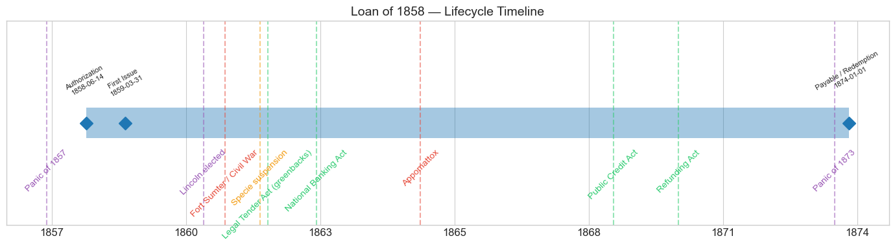
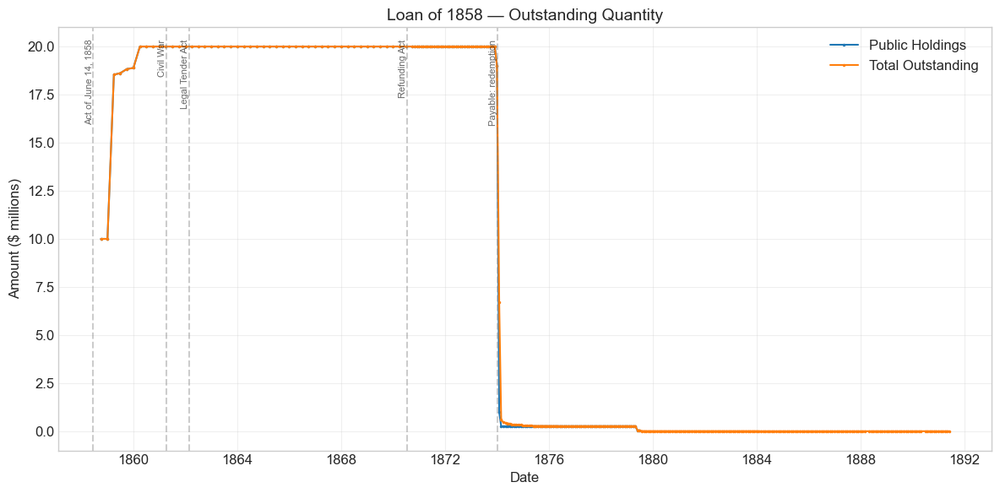
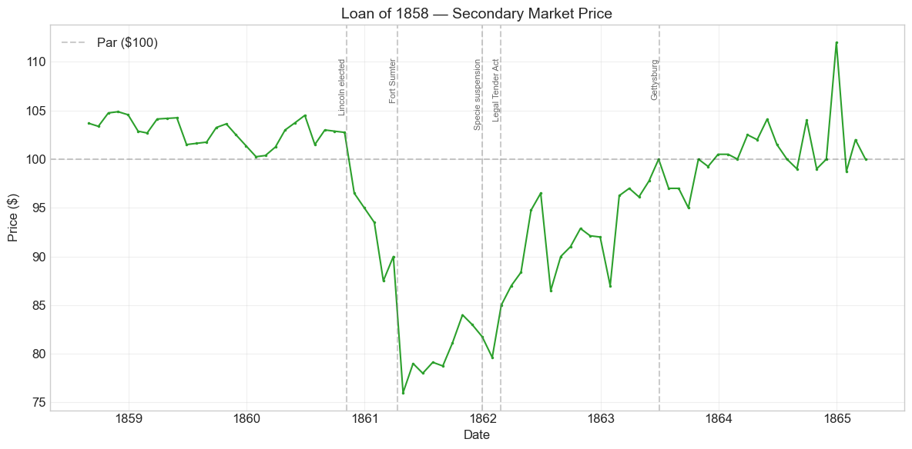
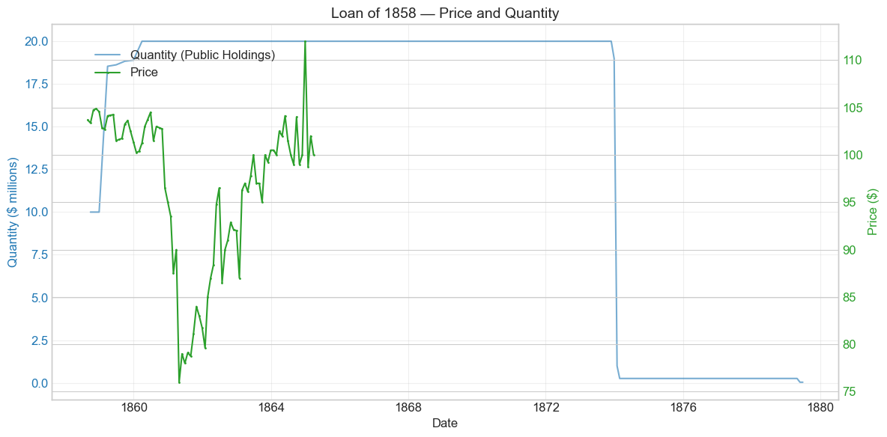
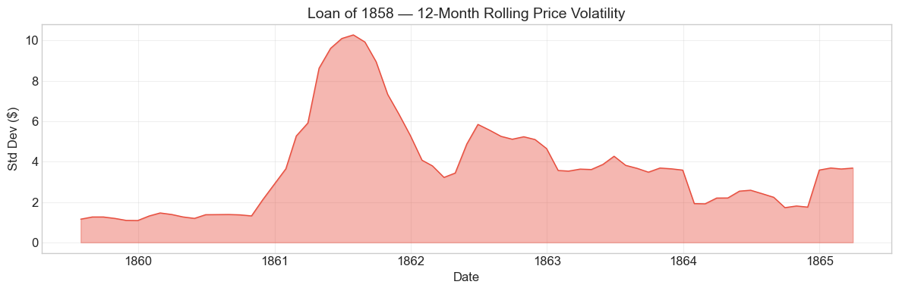

Bond Biography: Loan of 1858#
The Panic Loan: The Last Easy Borrowing of the Old Republic#
Enhanced from the Hall-Payne-Sargent US Federal Bond Database (2,857 issues, 1776–1960)
Bond ID (L1): 20092 Category: Interest Bearing > Marketable > Long Term Bond Coupon: 5% semi-annual, payable in coin Term: 15 years — payable January 1, 1874 (the “Fives of 1874”) Authorization: $20,000,000 under the Act of June 14, 1858
import pandas as pd
import numpy as np
import matplotlib.pyplot as plt
import matplotlib.patches as mpatches
import datetime
import warnings
warnings.filterwarnings('ignore')
plt.style.use('seaborn-v0_8-whitegrid')
plt.rcParams.update({'figure.figsize': (12, 6), 'font.size': 12,
'axes.titlesize': 14, 'axes.labelsize': 12})
# Load the bond database
store = pd.HDFStore('../data/BondDF.h5', mode='r')
BondList = store['BondList']
BondQuant = store['BondQuant']
BondPrice = store['BondPrice']
store.close()
BondQuant_T = BondQuant.transpose()
BondPrice_T = BondPrice.transpose()
bond_id = 20092
print(f'Loaded data for: Loan of 1858 (ID: 20092)')
/Users/thomassargent/anaconda3/lib/python3.9/site-packages/pandas/core/arrays/masked.py:60: UserWarning: Pandas requires version '1.3.6' or newer of 'bottleneck' (version '1.3.5' currently installed).
from pandas.core import (
Loaded data for: Loan of 1858 (ID: 20092)
Overview#
The Loan of 1858 was authorized by the Act of June 14, 1858, which empowered the Treasury to borrow **\(20 million** on bonds bearing interest of not more than 5 percent, redeemable after fifteen years --- making them the "Fives of 1874." It was the deficit loan of the **Panic of 1857**: the borrowing to which the Buchanan administration was driven when the post-panic depression collapsed customs revenue and turned the celebrated surpluses of the mid-1850s into deficits. The full \)20 million was eventually placed, in installments between 1858 and 1860, and — remarkably, given what was to follow — it was placed at a premium: the database records an average Price Sold of 1.0359, roughly \(103.6 per \)100 of face value, on a 5 percent bond.
During its lifetime on the secondary market the bond’s average price was \(96.57, ranging from \)76.00 to \(112.00 (80 monthly observations from 1858-08-31 to 1865-03-31, after which regular quotations for this issue disappear from the sources even though the bonds remained outstanding until redemption in 1874). Peak outstanding reached **\)20.00 million** on 1860-03-31.
What makes this bond’s story distinctive is its position as a hinge. Sold in the sunset of the antebellum fiscal order, it was the last major federal loan to go off easily — oversubscribed, above par, on the strength of a credit that the market still regarded as beyond question. Barely two years later the same market would take 6 percent bonds from Secretary John A. Dix only at 89 cents on the dollar (the story told in the companion chapter on the Loan of February 1861, Bond 20096). The Loan of 1858 lets us watch that collapse from the other side: not through the price a desperate Treasury had to accept on new paper, but through the secondary-market slide of a seasoned bond, from a comfortable 103–105 in 1860 to 76 in the month of Fort Sumter. The same government, the same coin coupon, the same promise — repriced by the growing probability that the promisor would not survive. The bond then lived through the entire Civil War as a quiet, second-tier issue quoted in depreciating greenbacks, and was finally paid off, in full and on time, in January 1874 — a fifteen-year promise made by the last antebellum administration and kept by the Grant administration in a transformed financial world.
The political fingerprints on the loan are themselves a piece of the story. It was authorized under President James Buchanan and marketed by Treasury Secretary Howell Cobb of Georgia — the same Cobb who in December 1860 would resign to join the secession movement and preside over the convention that organized the Confederacy. Investors who bought the Fives of 1874 at a premium in 1858 were, without knowing it, buying the last bonds the old Union would ever sell on easy terms, from a secretary who would shortly work to destroy the government whose signature they bore.
Historical Context#
The following major events occurred during this bond’s lifetime:
Date |
Event |
Category |
|---|---|---|
1857-08-24 to 1858-12-31 |
Panic of 1857 |
Crisis |
1860-11-06 |
Lincoln elected; secession crisis begins |
Crisis |
1861-04-12 to 1865-04-09 |
Civil War |
War |
1861-04-12 |
Fort Sumter attacked |
War |
1861-12-30 |
Banks suspend specie payments |
Monetary |
1862-02-25 |
Legal Tender Act (greenbacks) |
Legislation |
1862-07-01 |
Pacific Railway Act |
Legislation |
1863-02-25 |
National Banking Act |
Legislation |
1863-07-01 to 1863-07-03 |
Battle of Gettysburg |
Military |
1864-06-03 |
National Banking Act (revised) |
Legislation |
1865-04-14 |
Lincoln assassinated |
Other |
1869-03-18 |
Public Credit Act |
Legislation |
1869-09-24 |
Black Friday gold panic |
Crisis |
1870-07-14 |
Refunding Act (5s, 4.5s, 4s authorized) |
Legislation |
1873-09-18 to 1879-03-01 |
Panic of 1873 / Long Depression |
Crisis |
1874-01-01 |
Bonds payable; redemption of the Loan of 1858 |
Resolution |
1875-01-14 |
Specie Payment Resumption Act |
Legislation |
1879-01-01 |
Resumption of specie payments |
Monetary |
Four episodes deserve particular emphasis for this bond:
The Panic of 1857 (the bond’s parent). The failure of the Ohio Life Insurance and Trust Company on August 24, 1857 touched off a classic banking panic — suspensions of specie payments spread through the Northern banks that autumn — and a sharp, if comparatively brief, depression. For the federal Treasury the transmission channel was the customs house: the government of the 1850s lived almost entirely on tariff revenue, and when imports collapsed, receipts collapsed with them. The surpluses that Secretary James Guthrie had used to buy back federal bonds at premium prices (see the chapter on the Loan of 1842, Bond 20083, whose retirement those purchases funded) vanished within months, and were replaced by deficits that persisted to the end of the Buchanan administration. The Panic did not depress this bond’s price — the bond did not yet exist when the panic struck. The Panic created the bond: first the stopgap Treasury notes authorized in December 1857, then, when the deficit proved durable, the funded fifteen-year loan of June 1858.
The secession crisis and the Civil War (1860–65). This is the dominant event of the price series. From Lincoln’s election in November 1860 the bond slid almost without interruption — 102¾ in October 1860, 96½ in November, 87½ by February 1861, and 76 at the end of April 1861, after Fort Sumter — a collapse of roughly a quarter of the bond’s value in six months, with no change whatever in its terms. These 1860–61 quotations are still coin prices, and they are among the cleanest market measurements we have of what disunion was expected to cost. Thereafter the war shaped the series through the currency: after the banks suspended specie payments in December 1861 and the Legal Tender Act created the greenback in February 1862, quotations were made in depreciating paper, and much of the bond’s recovery toward and above par in 1862–64 records the fall of the greenback rather than the rehabilitation of the government’s credit. In gold terms the Fives of 1874 remained deeply discounted throughout the war.
The Black Friday gold panic (1869) and the Panic of 1873. Both fall within the bond’s legal lifetime but after its regular price series ends in 1865, so their effect on this particular issue cannot be traced in these data. Their fingerprints on the era’s coin bonds are described in the companion chapter on the Loan of February 1861, whose quotations continue through the 1870s. What can be said for the Fives of 1874 is indirect: the resolution of the currency question by the Public Credit Act of 1869, which pledged payment of the debt in coin, guaranteed that this bond’s principal would be paid in gold-value terms at maturity — and it was.
Redemption, January 1874. The bonds became payable on January 1, 1874, and the Treasury paid them off promptly — in the immediate aftermath of the Panic of September 1873, and in the middle of the refunding era created by the Act of July 14, 1870. The quantity data show the outstanding amount falling from \(18.99 million in December 1873 to under \)1 million by February 1874. That the redemption went through on schedule, weeks after the worst financial crash since 1837, is itself a quiet monument to how far federal credit had come since the bond’s darkest quotation in April 1861.
# Bond Lifecycle Timeline
fig, ax = plt.subplots(figsize=(14, 4))
# Key dates
dates = [('Authorization', '1858-06-14'), ('First Issue', '1859-03-31'), ('Payable / Redemption', '1874-01-01')]
events = [('Panic of 1857', '1857-08-24', 'crisis'), ('Lincoln elected', '1860-11-06', 'crisis'), ('Fort Sumter / Civil War', '1861-04-12', 'war'), ('Specie suspension', '1861-12-30', 'monetary'), ('Legal Tender Act (greenbacks)', '1862-02-25', 'legislation'), ('National Banking Act', '1863-02-25', 'legislation'), ('Appomattox', '1865-04-09', 'war'), ('Public Credit Act', '1869-03-18', 'legislation'), ('Refunding Act', '1870-07-14', 'legislation'), ('Panic of 1873', '1873-09-18', 'crisis')]
import matplotlib.dates as mdates
from datetime import datetime
# Plot bond lifetime bar
d0 = datetime.strptime(dates[0][1], '%Y-%m-%d')
d1 = datetime.strptime(dates[-1][1], '%Y-%m-%d')
ax.barh(0, (d1 - d0).days, left=mdates.date2num(d0), height=0.3,
color='#1f77b4', alpha=0.4, label='Bond Lifetime')
# Mark key dates
for label, date_str in dates:
d = datetime.strptime(date_str, '%Y-%m-%d')
ax.plot(mdates.date2num(d), 0, 'D', color='#1f77b4', markersize=10)
ax.annotate(f'{label}\n{date_str}', (mdates.date2num(d), 0.25),
ha='center', va='bottom', fontsize=8, rotation=30)
# Mark historical events
colors = {'war': '#e74c3c', 'crisis': '#9b59b6', 'legislation': '#2ecc71', 'other': '#95a5a6', 'monetary': '#f39c12'}
for name, date_str, cat in events:
d = datetime.strptime(date_str, '%Y-%m-%d')
ax.axvline(mdates.date2num(d), color=colors.get(cat, 'gray'), alpha=0.5, linestyle='--')
ax.annotate(name, (mdates.date2num(d), -0.25), ha='center', va='top',
fontsize=10, rotation=45, color=colors.get(cat, 'gray'))
ax.set_yticks([])
ax.xaxis.set_major_formatter(mdates.DateFormatter('%Y'))
ax.set_title('Loan of 1858 — Lifecycle Timeline')
ax.set_ylim(-1, 1)
plt.tight_layout()
plt.show()

Bond Features#
Feature |
Detail |
|---|---|
Name |
Loan of 1858 |
Authorizing Act |
June 14, 1858 |
Authorization Date |
June 14, 1858 |
First Issue Date |
March 31, 1859 (database convention; the first $10 million tranche was placed in 1858, and price quotations begin August 1858) |
Term |
15 years — payable January 1, 1874 |
First Redemption |
N/A (paid at maturity) |
Final Redemption |
January 1874 (small unpresented residue lingered on the books for years) |
Coupon Rate |
5.0% |
Payment Frequency |
Semi-annual (January and July), in coin |
Callable |
No |
Payable in Coin |
Yes |
Authorized Amount |
$20,000,000 |
Price Sold |
1.0359 (an average premium of about 3.6%) |
# Display full bond features from database
row = BondList.loc[20092]
display_cols = [
"Treasury's Name Of Issue", 'Authorizing Act', 'Term Of Loan',
'First Issue Date', 'First Redemption Date', 'Final Redemption Date',
'Coupon Rate', 'Coupons Per Year', 'Callable', 'Coin',
'Authorized Amount', 'Price Sold'
]
print('Bond Features from Database:')
print('=' * 55)
for col in display_cols:
if col in row.index:
print(f' {col:<30} {row[col]}')
Bond Features from Database:
=======================================================
Treasury's Name Of Issue Loan of 1858
Authorizing Act June 14, 1858
Term Of Loan 15 years
First Issue Date 1859-03-31 00:00:00
First Redemption Date NaT
Final Redemption Date NaT
Coupon Rate 5.0
Coupons Per Year 2.0
Callable 0.0
Coin 1.0
Authorized Amount nan
Price Sold 1.0359
I. The Panic of 1857 and the Death of the Surplus#
The middle 1850s were the high summer of antebellum federal finance. Gold from California, booming trade, and the tariff filled the Treasury faster than Congress could spend, and Secretary James Guthrie used the surpluses to buy back the funded debt at substantial premiums — retiring most of the loans of the Mexican War era and of 1842–43, and shrinking the interest-bearing debt to one of its lowest points since the 1830s. In 1857 Congress, embarrassed by abundance, actually cut the tariff.
The timing could hardly have been worse. On August 24, 1857 the New York office of the Ohio Life Insurance and Trust Company failed, and the elaborate structure of railroad securities, western land speculation, and bank credit that had grown up during the boom came down with it. Through September and October the panic spread; banks across the North suspended specie payments in October; and although the acute phase passed within months — the New York banks resumed by December — the depression that followed cut deeply into imports for more than a year.
For a government that drew the overwhelming bulk of its revenue from customs duties, the arithmetic was immediate and brutal. Receipts fell away just as the reduced tariff of 1857 took effect, while expenditures — swollen by, among other things, the Utah expedition — did not. The surplus of the Guthrie years turned into a string of deficits that lasted to the end of the Buchanan administration. The Treasury’s first resort, in the emergency session of December 1857, was the traditional stopgap: the Act of December 23, 1857 authorized up to $20 million of one-year Treasury notes (the “Treasury Notes of 1857,” which appear among this bond’s related issues below). But temporary notes could bridge a panic, not fund a depression. By the spring of 1858 it was clear that the deficit was structural, and Congress turned to a funded loan.
Bond Quantity Over Time#
The bond’s outstanding quantity peaked at $20.00 million on 1860-03-31. Data spans from 1858-09-30 to 1879-06-30 for public holdings (154 monthly observations), with the “Total Outstanding” series tracking small unpresented residues into the 1880s.
# Bond quantity over time
fig, ax = plt.subplots(figsize=(12, 6))
for stype in ['Public Holdings', 'Total Outstanding']:
try:
s = BondQuant_T.loc[(20092, stype)]
s = s[s.notna()]
if len(s) > 0:
ax.plot(s.index, s.values / 1e6, marker='.', markersize=3, linewidth=1.5, label=stype)
except KeyError:
pass
ax.set_title('Loan of 1858 — Outstanding Quantity')
ax.set_xlabel('Date')
ax.set_ylabel('Amount ($ millions)')
ax.legend()
ax.grid(True, alpha=0.3)
events = {'1858-06-14': 'Act of June 14, 1858', '1861-04-12': 'Civil War', '1862-02-25': 'Legal Tender Act', '1870-07-14': 'Refunding Act', '1874-01-01': 'Payable: redemption'}
for date_str, label in events.items():
d = pd.Timestamp(date_str)
ax.axvline(d, color='gray', alpha=0.4, linestyle='--')
ax.text(d, ax.get_ylim()[1]*0.97, label, rotation=90, va='top', ha='right', fontsize=8, alpha=0.7)
plt.tight_layout()
plt.show()

Quantity Analysis#
The quantity series has the same simple, historically legible shape as its near-contemporary, the Loan of February 1861: a staircase up, a long plateau, and a cliff.
The staircase (1858–1860). The first \(10 million tranche was placed in the late summer and autumn of 1858 --- the series opens at \)10 million on September 30, 1858, and market quotations begin in August, several months before the database’s formal “First Issue Date” of March 31, 1859, which reflects a reporting convention rather than the start of sales. Further installments followed as the deficit persisted: roughly \(18.5 million was out by March 1859, with small additions through the year, and the final step to the full **\)20 million** authorization came by March 1860. This drawn-out placement was not a sign of weak demand — the offerings were oversubscribed — but of the Treasury borrowing as its needs matured rather than all at once.
The plateau (1860–1873). For thirteen years the amount outstanding barely moved. The bonds were not callable, so the Treasury could not retire them early even had it wished to; and through the war and Reconstruction a 5 percent coin bond was, if anything, cheap money for a government whose marginal borrowing cost ran from 6 percent (in coin, at heavy discounts, in 1861) to 7.30 percent (the seven-thirty notes). In the postwar refunding era the Treasury’s attention went first to the callable Five-Twenties; the Fives of 1874 needed no attention — they carried a below-refunding-rate coupon and a fixed, approaching maturity. A small reduction appears at the end of 1873, consistent with the Treasury beginning to take in bonds as the payable date approached.
The cliff (January–February 1874). The bonds became payable on January 1, 1874, and the ledger shows the principal extinguished almost at a stroke: total outstanding fell from \(18.99 million in December 1873 to \)6.7 million at the end of January 1874 and \(0.59 million by the end of February. The redemption was carried out in the immediate wake of the Panic of September 1873, with the Treasury by then able to fund itself in the refunding fives under the Act of July 14, 1870 at rates no higher than this bond's own coupon. As with nearly every matured loan of the era, a residue of unpresented certificates --- a few hundred thousand dollars, dwindling to \)8,000 by 1879 and $2,000 by 1884 — lingered on the books for years, interest having ceased; this is bookkeeping, not default.
Secondary Market Prices#
Overall Statistics (1858-08-31 to 1865-03-31): Mean \(96.57, Range \)76.00–\(112.00, Std Dev \)8.16, 80 observations.
By Period:
Period |
Mean |
Std |
Min |
Max |
Obs |
|---|---|---|---|---|---|
Start to Issue (1858-08 to 1859-03) |
$103.87 |
$0.84 |
$102.69 |
$104.88 |
8 |
Issue to End (1859-03 to 1865-03) |
$95.87 |
$8.21 |
$76.00 |
$112.00 |
73 |
Reading the Chart#
Two cautions govern the interpretation of this series. First, as in the companion Civil War chapters, quotations from early 1862 onward are currency (greenback) prices, not gold prices. A 5 percent coin bond quoted near par in 1864, when the gold dollar commanded a premium of 100 percent and more over the greenback, was worth on the order of half its face value in gold — a discount as severe as anything in the secession winter. The wartime recovery of the quoted price is therefore in large part a currency phenomenon: as the greenback depreciated, the paper price of a bond with gold coupons was bid up. Second, the series simply stops in March 1865, nine years before the bond was redeemed. The Fives of 1874 were a modest $20 million issue in a market that by 1865 was dominated by hundreds of millions of wartime sixes and seven-thirties; quotations for the smaller antebellum issues became irregular and then ceased to be reported, and the database faithfully reflects that silence. The bond’s later life must be read from the quantity ledger, not the price column.
With those lenses, the price history falls into four acts:
The premium years (August 1858 – October 1860). The bond traded between roughly 100¼ and 104⅞ for over two years — a placid, richly priced series befitting a scarce coin bond of an unquestioned credit. The gentle easing from the 104s of late 1858 toward 100–101 in the winter of 1859–60 is consistent with the market absorbing the later installments of the loan and with ordinary money-market fluctuations; by mid-1860 the bond was back at 104½.
The secession slide (November 1860 – April 1861). From 102¾ in October 1860 the price broke to 96½ in November (Lincoln’s election), 95 in December (South Carolina’s secession), 93½ in January, and 87½ in February 1861 as the cotton states organized the Confederacy at Montgomery. A flicker of recovery to 90 in March — the compromise hopes and the orderly inauguration of the new administration — was extinguished by Fort Sumter: 76 at the end of April 1861, the low of the entire series and a fall of 27.5 percent from the 1858 peak. These are coin prices; nothing about the bond had changed except the market’s estimate that its issuer would survive to pay it.
War and paper money (1861–1864). The bond crawled along in the high 70s and low 80s through the grim second half of 1861, then began to climb after the specie suspension of December 1861 and the Legal Tender Act of February 1862 shifted quotations into depreciating greenbacks. The currency price crossed back through the 90s in 1862, touched 100 in mid-1863, and hovered around par through 1864 — always well below the currency quotations of the 6 percent bonds, as befitted its lower coupon and shorter remaining life.
The vanishing (1864–65). The final year of the series is visibly thin: prices jump between 99 and 104, and a single startling print of 112 in December 1864 — flanked by quotations of 100 and 98¾ — is best attributed to a thin, possibly flat-versus-accrued or otherwise anomalous quotation rather than to any repriceable event. In March 1865 the series ends at exactly 100.
# Annotated price chart
fig, ax = plt.subplots(figsize=(12, 6))
s = BondPrice_T.loc[(20092, 'Average')]
s = pd.to_numeric(s, errors='coerce').dropna()
if len(s) > 0:
ax.plot(s.index, s.values, marker='.', markersize=3, linewidth=1.5, color='#2ca02c')
ax.axhline(100, color='black', alpha=0.2, linestyle='--', label='Par ($100)')
ax.set_title('Loan of 1858 — Secondary Market Price')
ax.set_xlabel('Date')
ax.set_ylabel('Price ($)')
ax.legend()
ax.grid(True, alpha=0.3)
events = {'1860-11-06': 'Lincoln elected', '1861-04-12': 'Fort Sumter', '1861-12-30': 'Specie suspension', '1862-02-25': 'Legal Tender Act', '1863-07-01': 'Gettysburg'}
for date_str, label in events.items():
d = pd.Timestamp(date_str)
ax.axvline(d, color='gray', alpha=0.4, linestyle='--')
ax.text(d, ax.get_ylim()[1]*0.97, label, rotation=90, va='top', ha='right', fontsize=8, alpha=0.7)
plt.tight_layout()
plt.show()

# Price and Quantity — dual-axis chart
fig, ax1 = plt.subplots(figsize=(12, 6))
# Quantity (left axis)
for stype in ['Public Holdings', 'Total Outstanding']:
try:
q = BondQuant_T.loc[(20092, stype)]
q = q[q.notna()]
if len(q) > 0:
ax1.plot(q.index, q.values / 1e6, color='#1f77b4', alpha=0.6, label=f'Quantity ({stype})')
break
except KeyError:
pass
ax1.set_xlabel('Date')
ax1.set_ylabel('Quantity ($ millions)', color='#1f77b4')
ax1.tick_params(axis='y', labelcolor='#1f77b4')
# Price (right axis)
ax2 = ax1.twinx()
p = BondPrice_T.loc[(20092, 'Average')]
p = pd.to_numeric(p, errors='coerce').dropna()
if len(p) > 0:
ax2.plot(p.index, p.values, color='#2ca02c', marker='.', markersize=2, label='Price')
ax2.set_ylabel('Price ($)', color='#2ca02c')
ax2.tick_params(axis='y', labelcolor='#2ca02c')
ax1.set_title('Loan of 1858 — Price and Quantity')
ax1.grid(True, alpha=0.3)
fig.legend(loc='upper left', bbox_to_anchor=(0.1, 0.9))
plt.tight_layout()
plt.show()

Detected Price/Quantity Events#
The following significant movements were auto-detected:
Date |
Type |
Change |
Nearest Historical Event |
|---|---|---|---|
1859-03 |
quantity_increase |
+85.3% |
Second installment of the loan placed |
1860-11 |
price_drop |
-6.1% |
Lincoln’s election; secession crisis begins |
1861-02 |
price_drop |
-6.4% |
Confederacy organized at Montgomery |
1861-04 |
price_drop |
-15.6% |
Fort Sumter; outbreak of the Civil War |
1862-02 |
price_spike |
+6.8% |
Legal Tender Act; Union victories in the West |
1862-05 |
price_spike |
+7.2% |
Greenback depreciation; spring 1862 Union successes |
1862-07 |
price_drop |
-10.4% |
Failure of the Peninsula Campaign |
1863-01 |
price_drop |
-5.4% |
Fredericksburg winter; financial strain |
1863-02 |
price_spike |
+10.6% |
Gold premium surge; February 1863 finance acts |
1863-10 |
price_spike |
+5.3% |
Post-Gettysburg/Vicksburg confidence |
Each of these movements has a plausible causal reading, remembering that quotations through 1861 are coin prices and thereafter currency prices:
March 1859 (+85.3% quantity). Not a market event but a fiscal one: the Treasury placed the second great installment of the loan, lifting the amount outstanding from \(10 million to about \)18.5 million. The auto-detector’s association with the Panic of 1857 is right at one remove — the panic-born deficit was the reason the installment was needed.
November 1860 (-6.1%). Lincoln’s election on November 6 set the machinery of secession in motion, and the bond broke below par for the first time in its life, from 102¾ to 96½. This is the same credit event that, three months later, would force the Treasury to sell new 6 percent bonds at 89 — observed here in a seasoned issue.
February 1861 (-6.4%). By February seven states had voted to secede, delegates at Montgomery were organizing a Confederate government, and the Treasury’s own new borrowing (the Loan of February 1861) was going off at deep discounts. The Fives fell to 87½. The partial rebound to 90 in March tracks the flicker of compromise hopes around the change of administrations.
April 1861 (-15.6%). The bombardment of Fort Sumter (April 12–14) turned constitutional crisis into war. The fall from 90 to 76 — the series low — is the purest credit repricing in the bond’s history, fully parallel to the drop of the February 1861 sixes into the mid-80s in the same weeks.
February 1862 (+6.8%) and May 1862 (+7.2%). The recovery phase. The Legal Tender Act (February 25, 1862) shifted quotations into greenbacks, whose incipient depreciation raised the paper price of coin obligations; simultaneously the Union’s early-1862 victories — Forts Henry and Donelson in February, then Shiloh held, New Orleans taken, and McClellan advancing in the spring — briefly made a short war seem possible. The currency price climbed from the high 70s toward 96½ by June.
July 1862 (-10.4%). The collapse of those hopes. The Seven Days’ Battles (June 25–July 1) ended the Peninsula Campaign in retreat, Lincoln called for 300,000 more men, and the Treasury’s position deteriorated sharply; even in depreciating paper the bond fell from 96½ to 86½. The detector’s nearest tag (the Pacific Railway Act, signed July 1) is a calendar coincidence, not a cause.
January 1863 (-5.4%). The darkest financial winter of the war — Fredericksburg, the cabinet crisis, an unpaid army, and fresh greenback issues — depressed even paper prices of government bonds; the same-month drop appears in the February 1861 sixes.
February 1863 (+10.6%). The mirror image, again shared with the sixes: the gold premium surged early in 1863, lifting the paper value of coin coupons, and the finance legislation of February 25, 1863 — the National Banking Act and the $900 million loan act — reorganized the market for federal debt around exactly this kind of security.
October 1863 (+5.3%). With Gettysburg and Vicksburg behind it and Jay Cooke’s five-twenty campaign absorbing bonds by the tens of millions, the government’s paper credit firmed through the autumn of 1863; the Fives touched 100 for the first time since 1860.
Later single-month oscillations in 1864–65, including the isolated 112 print of December 1864, occur in a visibly thin market for this by-then-minor issue and are best not over-interpreted.
Price Volatility#
Maximum drawdown: -27.5% (from the peak of \(104.88 on 1858-11-30 to the trough of \)76.00 on 1861-04-30)
Average monthly return: 0.033%
The drawdown statistic is almost the exact twin of the Louisiana Six Per Cent Stock’s -27.9 percent in the War of 1812, and it measures the same thing: an existential repricing of United States credit, from premium to distress, with the instrument’s own terms unchanged. But where the Louisiana bond’s collapse took two and a half years of war to unfold, the Loan of 1858 lost its 27.5 percent in six months of peace — November 1860 to April 1861 — before a single major battle had been fought. Markets did not wait for the armies.
The rolling-volatility chart below shows the regime change with textbook clarity: near-zero volatility through 1858–1860, when the bond was a sleepy premium investment; a violent spike beginning in the winter of 1860–61 and peaking as the secession collapse and the first war year whipsawed the price; and persistently elevated volatility through 1862–64, when war news and the gyrations of the gold premium moved the greenback quotation month by month. The series’ quiet final months reflect thinning quotations as much as genuine calm.
# Rolling volatility (12-month window)
p = BondPrice_T.loc[(20092, 'Average')]
p = pd.to_numeric(p, errors='coerce').dropna()
if len(p) >= 12:
rolling_std = p.rolling(window=12).std().dropna()
fig, ax = plt.subplots(figsize=(12, 4))
ax.fill_between(rolling_std.index, rolling_std.values, alpha=0.4, color='#e74c3c')
ax.plot(rolling_std.index, rolling_std.values, color='#e74c3c', linewidth=1)
ax.set_title('Loan of 1858 — 12-Month Rolling Price Volatility')
ax.set_xlabel('Date')
ax.set_ylabel('Std Dev ($)')
ax.grid(True, alpha=0.3)
plt.tight_layout()
plt.show()
else:
print('Insufficient data for rolling volatility (need >= 12 observations)')

Issuance, Distribution, and Redemption#
The bond was originally sold at 1.0359 per dollar of face value — an average premium of about 3.6 percent, the last premium the Treasury would receive on a major loan until after the Civil War.
How it was sold. The loan was placed in the traditional antebellum manner: public advertisement, sealed bids, award to the highest bidders. There was no Jay Cooke, no mass subscription machinery, no patriotic canvass — that apparatus lay four years in the future. The bidders were the banks, private bankers, brokers, insurance companies, and individual capitalists of the seaboard cities, above all New York, buying for their own account and for customers, including trustees and savings institutions for whom a long federal coin bond was the premier conservative asset. The offerings were oversubscribed, and Secretary Cobb awarded the bonds at premiums averaging about 3.6 percent; installments followed through 1859 and into 1860 as the deficit required, until the full $20 million was out.
How it lived. Once placed, the issue settled into portfolios and traded quietly at a premium until the secession winter, then rode the collapse and the greenback era described above. After 1863 the National Banking Acts gave United States bonds a second institutional function — as security for national bank note circulation — and coin-interest bonds of this kind were eligible for deposit with the Treasurer for that purpose, which supported a steady institutional demand even for the smaller antebellum issues. Regular price quotations nonetheless faded after 1865: in a market saturated with five-twenties, ten-forties, and seven-thirties, a $20 million issue from the Buchanan years was a backwater, and its bonds increasingly sat in vaults rather than crossing the tape.
How it ended. The bonds became payable on January 1, 1874, and were redeemed at maturity — not called (they were not callable) and not exchanged in any dedicated conversion. The quantity ledger shows the operation compressed into weeks: from \(18.99 million outstanding in December 1873 to \)6.7 million at the end of January and \(0.59 million by the end of February 1874. The Treasury of 1873--74, operating under the Refunding Act of July 14, 1870 and despite the panic that had broken over Wall Street in September 1873, extinguished a fifteen-year-old promise essentially on schedule. Thereafter only the customary tail of unpresented certificates remained --- a few hundred thousand dollars dwindling through the 1870s to \)8,000 in 1879 and $2,000 in 1884 — matured debt on which interest had ceased, awaiting holders who never came.
Implications and Legacy#
A benchmark for the eve of destruction. The Loan of 1858’s greatest value to historians is as a baseline. Because it was sold at 103.6 in 1858 and quoted at 102–104 as late as October 1860, it fixes with precision what United States credit was worth on the eve of secession: a 5 percent coin bond at a premium, an implied long yield well under 5 percent. Every subsequent number — 96½ in November 1860, 89 on the new sixes in February 1861, 76 in April 1861 — can be measured against it. The Hall–Payne–Sargent database makes the whole descent legible in a single seasoned series, uncomplicated by changes in instrument or terms.
The last loan of the confident republic. The 1858 sale was the final major federal borrowing conducted in the sunshine: oversubscribed, above par, entirely at home, in coin, under the old rules. Its immediate successor (the Loan of 1860) was only partly placed; its next successor (February 1861) went at 89; and everything after that belonged to the revolution of greenbacks, five-twenties, and national banks. The bond is thus the “before” photograph of American public finance — taken, with unintended irony, by a Treasury Secretary who would soon join the Confederacy.
A footnote in Civil War finance, a datapoint in its prehistory. The $20 million of 1858 did not finance the Civil War in any material sense — the war consumed that sum in a fortnight. Its contribution was negative and cautionary: together with the Treasury notes of 1857 and the stunted Loan of 1860, it marks the string of deficits that left the Union’s Treasury nearly empty when the crisis came. Hammond’s phrase for 1861 — “sovereignty and an empty purse” — describes a purse that the Panic of 1857 had emptied and that the Loan of 1858 had only partially, and temporarily, refilled.
Creditworthiness, tested twice and honored twice. The bond’s holders were twice given reason to doubt: in 1861, when the market priced the bond at 76 cents, and in 1862–65, when their coin coupons were paid while the currency in which the bond was quoted depreciated by half. Both times the government performed — every semi-annual coupon in coin, and the principal in full at maturity in January 1874, weeks after the Panic of 1873 and under a wholly different party, administration, and monetary regime than had issued it. Investors who bought at the 1861 low of 76 and held to redemption earned a striking return for backing the Union at its nadir; even the original premium subscribers of 1858 were made whole in the end. As with the Louisiana Six Per Cents after 1815 and the Loan of 1842 after the state-default years, the durable lesson the market carried away — and the lesson that made the 4 percent refunding of 1877–79 possible — was that the United States pays.
A human footnote. Few securities can have had a stranger relationship with their own creator. Howell Cobb signed the loan into the market in 1858; in February 1861 he presided over the Montgomery convention that organized the Confederate States; and the bonds he had sold at a premium were redeemed in 1874 by the government he had tried to leave — five years after the Fourteenth Amendment declared the validity of the public debt of the United States “shall not be questioned,” and six years after Cobb’s own death. The bond outlived the sectional order that issued it, the war that nearly voided it, and the man who sold it.
References#
Primary Sources#
U.S. Congress, An Act authorizing a loan [Act of June 14, 1858], 11 Stat. 365.
U.S. Congress, An Act to authorize the issue of Treasury notes [Act of December 23, 1857], 11 Stat. 257.
Annual Reports of the Secretary of the Treasury on the State of the Finances, 1857–1874. Washington: Government Printing Office.
Bayley, R. A. (1881). The National Loans of the United States, From July 4, 1776 to June 30, 1880. Washington: Government Printing Office.
Scholarly Works#
Payne, J., Szoke, A., Hall, G. & Sargent, T. (2025). “Costs of Financing US Federal Debt: 1791–1933.” Quarterly Journal of Economics.
Hall, G. J. & Sargent, T. J. (2018). “Brief History of US Debt Limits Before 1939.” Proceedings of the National Academy of Sciences, 115(12), 2942–2945.
Hammond, B. (1970). Sovereignty and an Empty Purse: Banks and Politics in the Civil War. Princeton University Press.
Huston, J. L. (1987). The Panic of 1857 and the Coming of the Civil War. Louisiana State University Press.
Mitchell, W. C. (1903). A History of the Greenbacks, with Special Reference to the Economic Consequences of Their Issue: 1862–65. University of Chicago Press.
Unger, I. (1964). The Greenback Era: A Social and Political History of American Finance, 1865–1879. Princeton University Press.
General Histories#
Dewey, D. R. (1918). Financial History of the United States. New York: Longmans, Green and Co.
Studenski, P. & Krooss, H. E. (1952). Financial History of the United States. McGraw-Hill.
McPherson, J. M. (1988). Battle Cry of Freedom: The Civil War Era. Oxford University Press.
Enhanced Bond Biography generated from the Hall-Payne-Sargent Bond Database. Companion chapters: Loan of 1842 (Bond 20083), Loan of February 1861 (Bond 20096), and Five-Twenties of 1862 (Bond 20101).